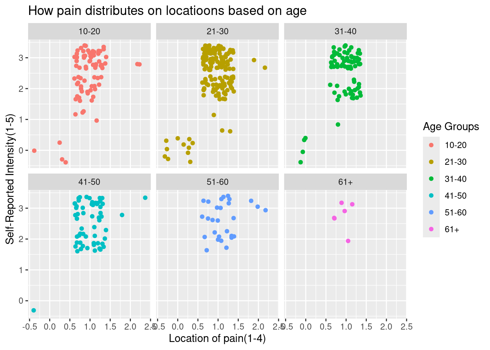

Data analysis regarding migraines and relation between its factors.
Image: representation of vision during a migraine episode with auras present a.k.a ocular migraines.
Introduction
How does pain levels distribute across locations based on age?
Prediction: Younger people will have more high levels of pains therefore longer duration than older people.
Does different locations trigger a different intensity level of migraines?
Prediction: Migraines near the frontal will be more common and create a more intense pain for the patients.
Approach
Data Source Info: Kaggle, Migraine Symptom Data set for Classification
Data was collected through public access publication of the National Library of Medicine and detailed symptoms profiles from observations.
Variables:
Age: based on participant
Duration: in hours
Location:
1-Unilateral, 2-Bilateral, 3-Frontal, 4-Temporal
Intensity:
Pain from 1(mild) to 5(severe)
Frequency: over specific period
Vomit: 1-yes, 0-no
Language: speaking ability
1-yes, 0-no
Ataxia: coordination problems
1-yes.0-no
Character: type of pain 1-throbbing, 2-pressing, 3-sharp, 4-dull
Phonophobia: sound sensitivity
1-yes, 0-no
Vertingo:
1-yes, 0-no
Conscience: reduced consciousness
1-yes, 0-no
Nausea: any nausea present
1-yes, 0-no
Photophobia: light sensitivity
1-yes, 0-no
Tinnitus:
1-yes, 0-no
Paresthesia:
abnormal skin sensations
1-yes, 0-no
Motor: motor function
1-yes, 0-no
Visual: aura or flashes
1-yes, 0-no
Hypoacusis:
1-yes, 0-no
DPF: Dysfunctional physical factor
1-yes, 0-no
Defect: visual field defect
1-yes, 0-no
Sensory: numbness or tingling
1-yes, 0-no
Diplopia:
1-yes, 0-no
Type:
(target variable)
Records of 24 variables and 400 participants(rows).
While type is under the variables table it is based on the final diagnosis on migraine using the data set.
Tools used:
Posit cloud
Github
tidyverse package
ggplots2 package
Kaggle Data Sets
Approach & Predictions
I will analysis how the age of the participants factor into the pain levels of the migraines and the duration of such. As well as the location and its effect on the pain of the presented migraine during the time the records were made.
I predict participants with younger ages will have a higher pain intensity due to technology over use and longer duration due to long work shifts or long classes schedules during school(which both required an immense amount of technology use). Locations near the frontal part of our face will be the most common and painful due to daily habits disturbance from them.
Codes & Results:
library(ggplot2)library(tidyverse)
── Attaching core tidyverse packages ──────────────────────── tidyverse 2.0.0 ──
✔ dplyr 1.1.4 ✔ readr 2.1.5
✔ forcats 1.0.0 ✔ stringr 1.5.1
✔ lubridate 1.9.4 ✔ tibble 3.3.0
✔ purrr 1.1.0 ✔ tidyr 1.3.1
── Conflicts ────────────────────────────────────────── tidyverse_conflicts() ──
✖ dplyr::filter() masks stats::filter()
✖ dplyr::lag() masks stats::lag()
ℹ Use the conflicted package (<http://conflicted.r-lib.org/>) to force all conflicts to become errors
In this graph we use age as our x variable to see how as we age the intensity of the migraines ether minimize or maximizes in the level of pain.
intensity_vs_age <-ggplot(data = migraine_symptom_classification,mapping =aes(y = Intensity, x = Age)) +geom_point() +labs(x ="Participants Age",y ="Self-Reported Intensity Level(1-5)",title ="Migraine Intensity Based On Age") intensity_vs_age
ggsave(filename ="intensity_vs_age.png")
Saving 7 x 5 in image
Unexpectedly younger people actually have more cases of lower intensity levels compared to older people, thus rejecting the first part of my prediction.
pain_duration_vs_age <-ggplot(data = migraine_symptom_classification,mapping =aes(y = Intensity, x = Age, color = Duration)) +geom_point(position ="jitter", alpha =0.7, size =2) +labs(x ="Participants Age", y ="Self-Reported Intensity Level(1-5)",title ="Migraine Intensity Based On Age", color ="Duration (hrs)")pain_duration_vs_age
ggsave(filename ="pain_duration_vs_age.png")
Saving 7 x 5 in image
Image: In this graph we used the position of “jitter” in order to have a better understanding of the results of our 400 participants without it overlapping.
While the older participant had stronger pain levels they seem to have shorter duration migraines compared to the younger people which correlates with the second part of my prediction regarding age vs pain levels.
Location Correlation:
Our code allows us to distinguish how based on the location the pain distributes in different levels of intensity.
(Used methods such as arrange and filter to determine age groups needed)
new_migraine_symptom_classification <- migraine_symptom_classification |>mutate(age_better =case_when( Age >10& Age <=20~"10-20",Age >20& Age <=30~"21-30", Age >30& Age <=40~"31-40", Age >40& Age <=50~"41-50", Age >50& Age <=60~"51-60", Age >60& Age <=90~"61+",))intensity_vs_location <-ggplot(data = new_migraine_symptom_classification, mapping =aes(x = Location, y = Intensity, color = age_better)) +geom_point(position ="jitter") +facet_wrap(~age_better) +labs(x ="Location of pain(1-4)", y ="Self-Reported Intensity(1-5)",title ="How pain distributes on locatioons based on age", color ="Age Groups")intensity_vs_location

ggsave(filename ="intensity_vs_location.png")
Saving 7 x 5 in image
Image: Those in between the ages of 21-30 located their pain in a unilateral location(making them 136 out of the 400 participants).
Unlike my prediction the graph tells us the majority of the participant developed migraines in unilateral locations, meaning only in one side of the head.
Discussion
My first hypothesis was younger people having both higher pain levels and longer duration of migraine periods. While the first part regarding the pain level was undermined by the scatter point graph it seemed to support the second part since the younger participants has more cases of short duration compared to participants in ages 21+. As for my second prediction concerning the pain levels given a location I was convince the frontal(3) location would be the most common and painful, however it seems like most of the participant across the table have suffered from unilateral(1) migraines at pain level of 3 which can be seen as intense pain. The ones who suffered from both unilateral and level 3 migraines also seemed to be those in ages 21-30 with 136 out of the 400 participants being in that category. I do believe less in my hypothesis and also wonder how even though ages 10-30 tend to be the most individuals with high technology access don’t suffer at level compared to the older generations.